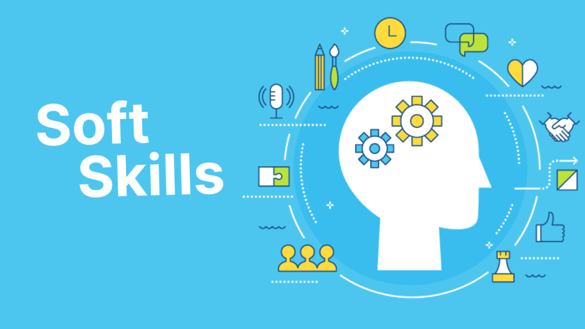

Conteúdo de soft skills

- Comunicação - Saber se expressar com clareza e ouvir ativamente.
- Trabalho em equipe – Cooperar com os outros para atingir objetivos comuns.
- Empatia – Compreender sentimentos e perspectivas dos outros.
- Criatividade – Pensar fora da caixa e encontrar soluções inovadores
- Resiliência – Lidar bem com mudanças, desafios e frustrações.
- Pensamento crítico – Analisar situações de forma lógica e estratégica.
- Gestão do tempo – Organizar e priorizar tarefas de maneira eficiente.
- Liderança – Inspirar, motivar e guiar pessoas.
- Adaptabilidade – Ser flexível frente a novas situações.
- Inteligência emocional – Reconhecer e gerenciar suas emoções e as dos outros.
- São cada vez mais valorizadas no mercado de trabalho.
- Ajudam na resolução de conflitos.
- Favorecem um ambiente de trabalho mais colaborativo.
- Complementam as habilidades técnicas.
- São essenciais para cargos de liderança e gestão.
- Autoconhecimento – Entenda seus pontos fortes e fracos.
- Feedbacks – Peça opiniões sinceras sobre seu comportamento.
- Cursos e workshops – Existem formações focadas em soft skills.
- Leitura e estudo – Livros de psicologia, liderança e comunicação ajudam muito.
- Prática diária – Exercite a escuta ativa, a empatia e a proatividade no dia a dia.
- Mentoria – Trocar experiências com profissionais mais experientes pode abrir sua visão.